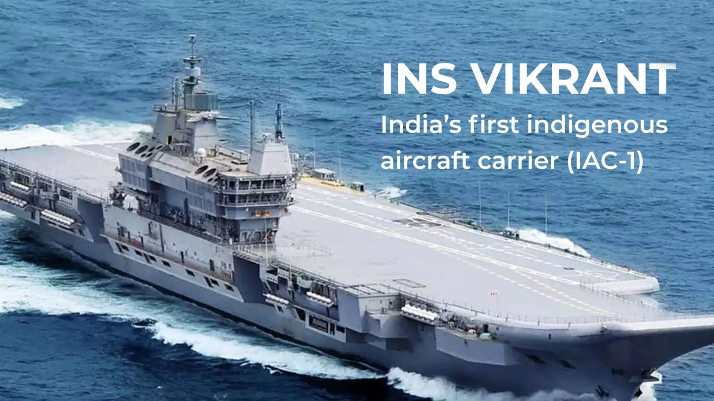
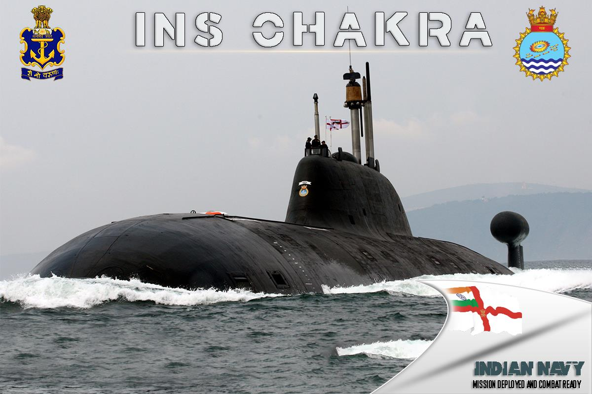
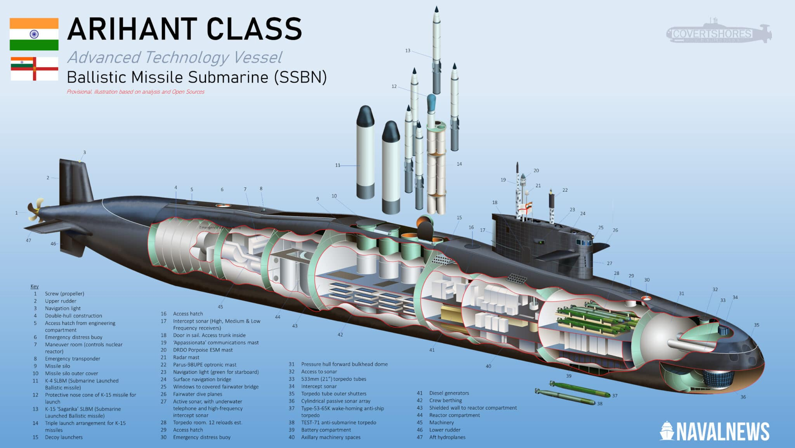
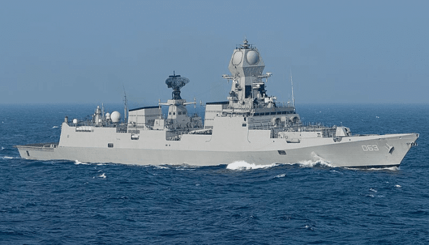
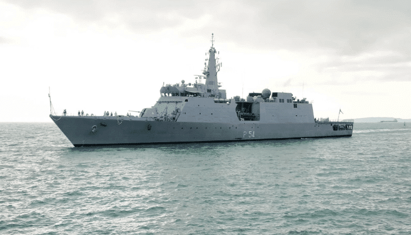

INS Vikramaditya is a Vikrant-class aircraft carrier of the Indian Navy. The ship was originally built as Baku,
a modified Kiev-class aircraft carrier, for the Soviet Navy. It was later decommissioned, purchased by India, and extensively refurbished and modernized before being commissioned into the Indian Navy as INS Vikramaditya in 2013.
The carrier is named after Vikramaditya, a legendary emperor of Ujjain, India. INS Vikramaditya is a crucial component of the Indian Navy's maritime capabilities, providing power projection and air dominance capabilities. It is equipped with a variety of aircraft, including MiG-29K fighters, Kamov-31 helicopters, and other support aircraft.
Specifications
Displacement: Full Load :- Approximately 45,000 tons
Length:
Overall :- Approximately 283 meters (929 feet)
Aircraft Capacity:
Up to 30 aircraft, including MiG-29K fighters and Kamov-31 helicopters
Crew:
Around 1,600, including ship's crew and air wing personnel
INS Vikrant.

About
INS Vikrant, commissioned in 2013, is India's first indigenous aircraft carrier, marking a milestone
in the nation's defense capabilities. Constructed at Cochin Shipyard, it showcases India's
commitment to self-reliance in naval technology. Designed for fixed-wing and helicopter
operations, INS Vikrant significantly strengthens India's maritime prowess. With a focus on
indigenous development, the carrier reflects the country's strategic ambitions in the Indian Ocean region.
Its commissioning underscores India's emergence as a formidable naval power.
Specifications
The made in India INS Vikrant is 262m (865 ft) long and 62m (203 ft) wide
and has a displacement of around 43,000 tonnes and a designated speed of 28 knots.
INS Vikrant consists of 18 floors 14 decs with 2300 compartments which can accommodate around 1600 crew members with a special cabin for women officers
INS Vikrant is important for the Indian Navy because it is named after the prestigious INS Vikrant R11, which was a symbol of national pride.
Role in 1971 Indo-Pak War– In the Indo Pak War of 1971 INS Vikrant (R11) was assigned to the Eastern Naval Command.
INS Chakra

About
INS Chakra refers to nuclear-powered submarines operated by the Indian Navy. As of my last knowledge update in January 2022, India has had two submarines named INS Chakra. Both submarines are of Russian origin and are lease agreements between India and Russia. Chakra (I):
The first INS Chakra, known as K-43, was leased from Russia in 1988 for a period of three years. It was an Akula-class nuclear-powered attack submarine. Chakra (II):
The second INS Chakra, known as K-152 Nerpa, was leased from Russia for a ten-year period and was commissioned into the Indian Navy in 2012. It is also an Akula-class submarine.
Specifications
Displacement:
Akula-class submarines typically have a displacement of around 8,140 tons when surfaced.
Length:
The length of an Akula-class submarine is approximately 110 meters (360 feet).
Depth:
Akula-class submarines have a maximum diving depth of approximately 600 meters (1,970 feet).
Nuclear Propulsion:
The Akula-class submarines are nuclear-powered, utilizing a pressurized water reactor for propulsion, providing them with extended endurance and operational range.
INS Arihant

About
INS Arihant (SSBN 80) is a nuclear-powered ballistic missile submarine and also the lead ship of her class. After it was launched on 26 July 2009 by the then PM Manmohan Singh, it was sent for sea trials on 23rd February 2016 and was commissioned the same year. She was deployed in 2018.
It was announced on 5 November 2018 that INS Arihant had completed its first 20-day-long deterrent patrol the previous day. The 6000-tonne ship was constructed as part of the Advanced Technology Vessel Project at the Ship Building Centre in the Indian Port city of Visakhapatnam.
Specifications
Displacement:
INS Arihant has a reported displacement of around 6,000 tons when submerged
Speed:
Nuclear-powered submarines like INS Arihant can achieve high underwater speeds, typically in the range of 20 knots or more.
Stealth Features:
SSBNs like INS Arihant incorporate advanced stealth features to minimize their acoustic
and electromagnetic signatures, enhancing their survivability in contested environments.
Armament:
INS Arihant is armed with ballistic missiles. It is equipped with the K-15 Sagarika
(also known as B-05) and K-4 ballistic missiles, which have varying ranges.
INS Kolkata

About
INS Kolkata is a part of the Kolkata class, also known as Project 15 A, of the guided-missile destroyers built for the Indian Navy. This class has two more ships- Kochi and Chennai, all constructed by Mazagon Dock Limited.
They are said to be one of the biggest destroyers operated by the Indian Navy. INS Kolkata is said to be the most potent warship made in India. It measures 164 m lengthwise and has a width of 18 m with 7400 tonnes of full load displacement. INS Kolkata has a complement of 30 officers and 300 sailors.
Specifications
Commissioning:
INS Kolkata, the lead ship, was commissioned on August 16, 2014, and is the first ship of the Kolkata-class.
Class Features:
The Kolkata-class destroyers are advanced, stealthy warships designed for multi-role operations
Displacement:
The displacement of INS Kolkata-class destroyers is approximately 7,500 tons, indicating the weight of the water displaced by the ship.
Sensors and Systems:
The destroyers are equipped with state-of-the-art sensor suites, including radar systems, sonars, and electronic warfare systems, enhancing their situational awareness and self-defense capabilities.
INS Saryu

About
INS Saryu is the biggest offshore patrol vessel in the Indian Navy. It was built in the country by Goa Shipyard Limited and is homeported at Port Blair, part of the Andaman and Nicobar Command. It will engage in offshore surveillance and patrol Indian exclusive economic zones and sea lines of communication. She also engages in anti-piracy patrols and fleet-support operations.
She belongs to the Saryu class of patrol ships ordered by the navy for coastal patrol operations in 2008. Saryu was constructed for three and a half years for US$ 78 million.
Specifications
Displacement:
The Kolkata-class destroyers have a displacement of around 7,500 tons.
Length:
These destroyers are approximately 163 meters (535 feet) long.
Range:
They have an operational range that allows them to cover long distances without refueling.
Propulsion:
The destroyers use a combination of gas turbines and diesel engines for propulsion.